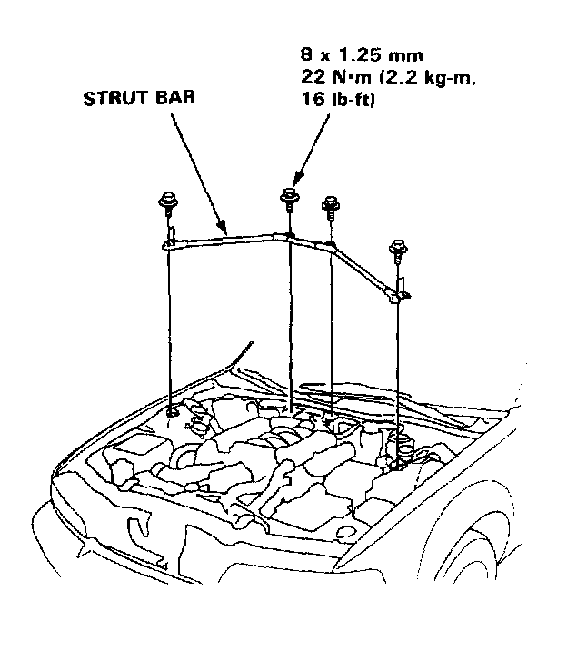
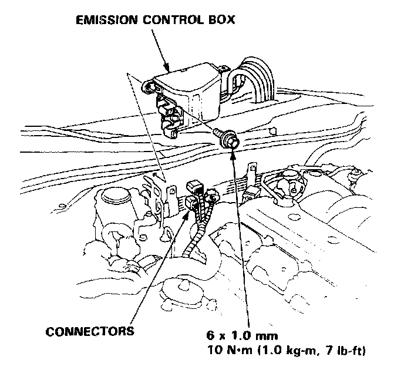
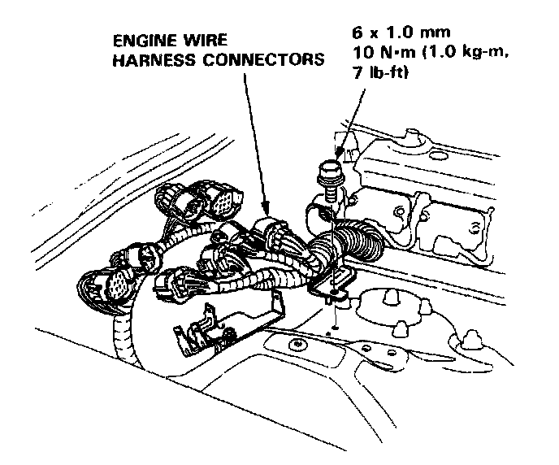
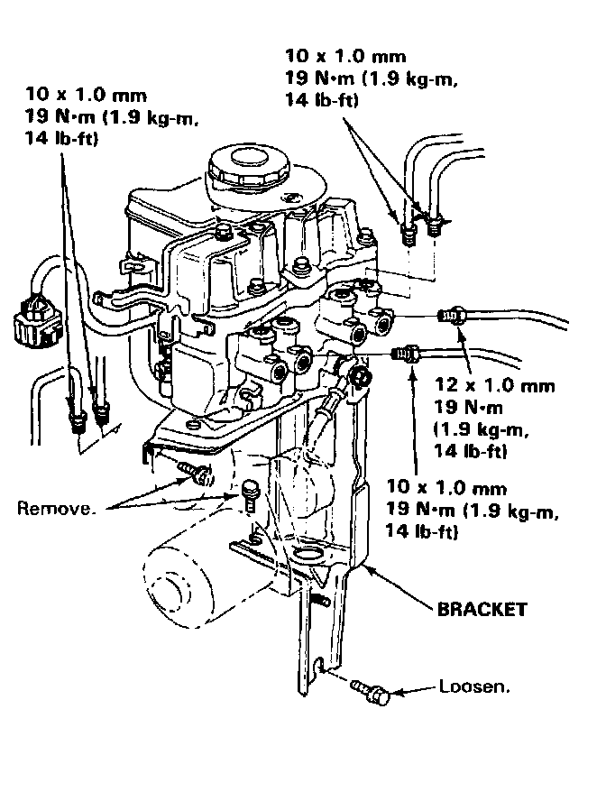

Hydraulic Control Assembly - Antilock Brakes: Service and Repair
Modulator UnitReplacement
- Before removing the modulator-to-pump high-pressure line, be sure to relieve the fluid pressure from the maintenance bleeder. Service and Repair
CAUTION:
- Be careful not to bend or damage the brake pipes when removing the modulator unit and pump assembly.
- Do not spill brake fluid on the car; it may damage the paint; if brake fluid does contact the paint, wash it off immediately with water.
- To prevent spills. cover the hose joints with rags or shop towels.
- Do not mix different brands of brake fluid as they may not be compatible.
- Do not reuse the drained fluid. Use only clean DOT 3 or 4 brake fluid.
- When connecting the brake pipes. make sure that there is no interference between the brake pipes and other parts.

Removal
1. Remove the strut bar.

2. Disconnect the three connectors, then remove the emission control box from the bulkhead. (Do not disconnect the vacuum hoses.)
3. Unbolt the brake line bracket (located under the emission control box) to allow for brake line fitting removal.

4. Disconnect the four engine wire harness connectors and unbolt the harness clamp. Disconnect the three solenoid/pump connectors.
5. Remove the two upper heat shield mounting bolts. Raise the car and loosen, but do not remove, the lower heat shield mounting bolt. (The lower heat shield mounting hole is shaped like a keyhole.)
6. Lower the car and remove the heat shield.
7. Use the Bleeder T-wrench to relieve the accumulator/line pressure. Service and Repair

8. Disconnect the six steel brake lines from the modulator unit. Cap or plug the two lines from the master cylinder to prevent fluid loss.
9. Loosen, but do not remove the lower modulator bracket mounting bolt. Remove the two upper modulator bracket mounting bolts, then lift the modulator unit, pump assembly, and bracket out of the car as an assembly.
Installation
Except for the following steps, installation is the reverse of the removal procedure.
1. When tightening the steel brake lines, have an assistant depress the brake pedal lightly to bleed the lines.
2. Bleed all four calipers with a pressure bleeder. Conventional Brake System
3. Remove the ABS 2 fuse from the under-hood fuse/relay box for at least three seconds to clear the ABS control unit's memory.
4. Function test the ABS with the ALB Checker. With Anti-Lock Brake (ALB) Checker